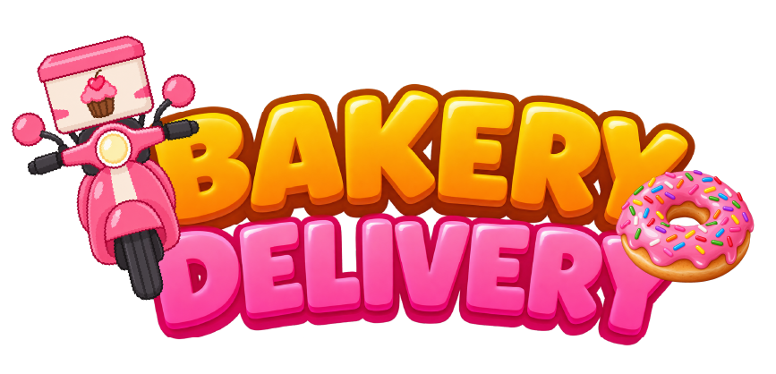
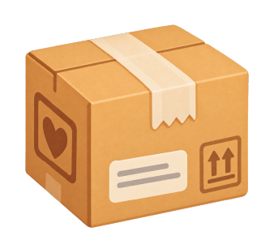
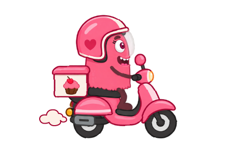

Preparando la panadería…

Instructions
¡Prepara los pedidos! 🍰
Atrapa con la caja solo los productos que aparecen en la nota del pedido.
Ten cuidado: también caerán objetos que no pertenecen al pedido.
Anxi aparecerá con dudas durante el juego. Decide cómo responder y continúa preparando el pedido.
Cuando termines, puedes revisarlo antes de enviarlo, pero el tiempo sigue corriendo.
¡Completa los pedidos y prepáralos para entregar!
¡Pedido listo!
REVISAR PEDIDO

¡AHORA TOCA ENTREGARLOS!
Lleva los 5 pedidos a sus destinos antes de que termine el tiempo.
Instrucciones

↑ ↓ CAMBIA DE CARRIL
Usa las flechas ↑ y ↓ para cambiar entre los dos carriles.
DESLIZA ↑ ↓ PARA CAMBIAR DE CARRIL
Desliza hacia arriba o hacia abajo para mover a Meli entre los dos carriles.
¡CUIDADO CON LOS OBSTÁCULOS!
Cambia de carril para esquivar lo que aparezca en el camino.
ENTREGA LOS 5 PEDIDOS
Sigue avanzando hasta llegar a cada destino.
¡TODOS LOS PEDIDOS ENTREGADOS!
5 / 5
¡Terminaste el recorrido!
SE ACABÓ EL TIEMPO
Todavía quedan pedidos por entregar.